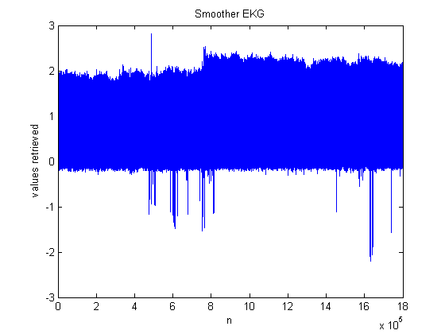

Contents
Assignment 1 - Biosignals Processing;
Luiz Medeiros
clear; clc; close all; close all; clear; clc; % just doing some house keeping; load('edbe0103'); % loading the file; fc=sig(:,1); % setting my own variable to the signal captured in channel 1; % fc= first channel; I=find(fc>1); % using the find function from matlab to help us find all of % the item that are above 1, where 1 is our treshold; %x=zeros(length(I)); x=ones(1800000,1); % here we initiate the first dummy var x, which will % contain all the values on their respective indexes coming from I; n=1; % our main iterative variable while n<=length(I) x(I(n))=fc(I(n)); % here we have a the index and value setting. n=n+1; end %figure,plot(fc),hold,plot(x,'r*'); % this was mainly for test purposes. n=1; % resetting our iterative variable to keep some consistency. mx=[];% denotes the maxima; first row is the spot, second is the value. s=1;v=2; % (s)pot, (v)alue; j=1; % our second iterative variable used; % this loop basically sets up the maxima array so we have maxima and % positions. while n<(length(x)-1) diff=x(n+1)/x(n)-1; % this is the logic we follow to find the where % the maxima is located. Basically where there occured a change of % signs from positive to negative. if diff<0 mx(s,j)=n; mx(v,j)=x(n); j=j+1; %n=n+1; %diff=x(n+1)/x(n)-1; % below is the iterative logic to get to the next positive position. while diff<=0 && n<(length(x)-1) diff=x(n+1)/x(n)-1; n=n+1; end else n=n+1; end end n=1; % we now create another dummy matrix to store only the maxima. % we then plot it against the original first channel samples. y=ones(1800000,1); while n<length(mx) y(mx(s,n))=mx(v,n); n=n+1; end figure, plot(tm,fc),hold,plot(tm,y,'r*'),xlabel('Time t (tm)'), ylabel('Recorded Sample values'),title('Recorded Samples vs Time t'), legend('Sample Values','Maxima'); % our maxima are denoted as red stars. % Above is the main algorithm and execution to reach the TH vector % which shall be filled with the maxima.
Current plot held
Plot, var and std of TH.
n=1;j=1; TH=[]; % we will use the maxima (mx) vector that we created earlier with all % the values in their corresponding spots. while n<(length(mx)-1) TH(n)=mx(s,n+1)-mx(s,n); n=n+1; end figure, % below is the formatted plot in relation to its time domains. plot(TH),title('Plot of TH,the distance between each maxima'), xlabel('Time t'),ylabel('Distance values of TH'); varTH=var(TH); stdTH=std(TH); meanTH=mean(TH); disp('This is the mean of TH: '),disp(meanTH); disp('This is the variance of TH: '),disp(varTH); disp('This is the standard deviation of TH: '),disp(stdTH);
This is the mean of TH: 243.3544 This is the variance of TH: 930.7230 This is the standard deviation of TH: 30.5078
Question 2;
clear;close all;clc; load('edbe0103.mat'); % Here we are again loading everything for the % second set of computations; x=sig(:,1); x=x-mean(x); %This smoothes the signal. % We will now output a smother version of the EKG signal; figure, plot(x),title('Smoother EKG'),xlabel('n'),ylabel('values retrieved'); % below is a series of procedure that demonstrates one presumed period % of our signal. n1=222838; n2=223075; tx=x(n1:n2); ltx=length(tx); figure(2) subplot(311),plot(tx), title('A select epoch to be used as a template') % flipud instruction reverses the matrix for cross checking and % correlation; b=flipud(tx); a=1; figure(2) subplot(312), plot(b), title('TIme reverse of the template shifter for causality') rtx=xcorr(tx); %Autocorrelation of the template ctx=conv(tx,b); %Convolution of the template with its time reverse. The result should be the same as rtx. % subplot(313), plot(-ltx+1:ltx-1,rtx), hold,plot(-ltx+1:ltx-1,ctx,'r'), legend('autocorrealtion', 'convolution') %filter the EKG data with the correlation filter % The above plot is demonstrating the close relationship between the % convolution and autocorelation concepts, as discussed previously. xx=filter(b,a,x); % figure(1) % subplot(212), plot(xx), title('Correlation filter output')
Now we will employ the previous worked algorithm in vector xx;
fc=xx; % setting my own variable to the signal captured in channel 1; % fc= first channel; I=find(fc>1); % using the find function from matlab to help us find all of % the item that are above 1, where 1 is our treshold; %x=zeros(length(I)); x=ones(1800000,1); % here we initiate the first dummy var x, which will % contain all the values on their respective indexes coming from I; n=1; % our main iterative variable while n<=length(I) x(I(n))=fc(I(n)); % here we have a the index and value setting. n=n+1; end %figure,plot(fc),hold,plot(x,'r*'); % this was mainly for test purposes. n=1; % resetting our iterative variable to keep some consistency. mx=[];% denotes the maxima; first row is the spot, second is the value. s=1;v=2; % (s)pot, (v)alue; j=1; % our second iterative variable used; % this loop basically sets up the maxima array so we have maxima and % positions. while n<(length(x)-1) diff=x(n+1)/x(n)-1; % this is the logic we follow to find the where % the maxima is located. Basically where there occured a change of % signs from positive to negative. if diff<0 mx(s,j)=n; mx(v,j)=x(n); j=j+1; %n=n+1; %diff=x(n+1)/x(n)-1; % below is the iterative logic to get to the next positive position. while diff<=0 && n<(length(x)-1) diff=x(n+1)/x(n)-1; n=n+1; end else n=n+1; end end n=1; % we now create another dummy matrix to store only the maxima. % we then plot it against the original first channel samples. y=ones(1800000,1); while n<length(mx) y(mx(s,n))=mx(v,n); n=n+1; end figure, plot(tm,fc),hold,plot(tm,y,'r*'),xlabel('Time t (tm)'), ylabel('Recorded Sample values'),title('Recorded Samples vs Time t'), legend('Sample Values','Maxima'); % our maxima are denoted as red stars. % Above is the main algorithm and execution to reach the TH vector % which shall be filled with the maxima.
Current plot held
Computing the Correlation Coefficient;
According to the research paper, the correlation Coefficient may be defined as follows: Covariance of (Template signal , Test signal)/sqrt(Template signal* Test signal);
cf=transpose(fc);
mfc=mean(fc);
my=mean(y);
coVar=cov(fc,y)
r=sqrt(my*mfc)
R=coVar./r
figure,
plot(fc),
hold,plot(y,'r*')
coVar =
9.8007 1.1949
1.1949 1.1158
r =
0.0022
R =
1.0e+003 *
4.4609 0.5439
0.5439 0.5079
Current plot held